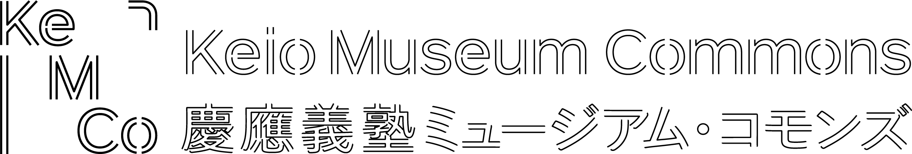
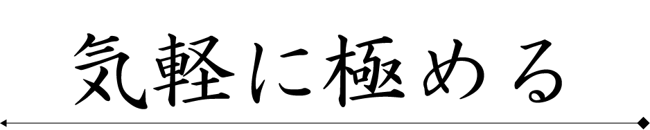
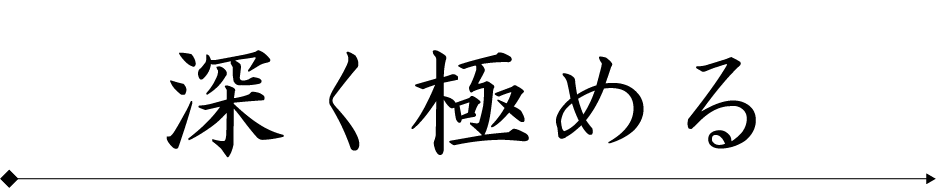

<!DOCTYPE html>
<head>
    <meta charset="UTF-8">
    <!-- CSS
    ================================================== -->
    <link rel="stylesheet" href="css/style.css">
    <link rel="stylesheet" href="css/works.css">
    <link href="https://use.fontawesome.com/releases/v5.6.3/css/all.css" rel="stylesheet">
    <link href="https://cdn.jsdelivr.net/npm/remixicon@2.2.0/fonts/remixicon.css" rel="stylesheet">
    <link rel="stylesheet" href="css/remix.css">
    <link href="https://fonts.googleapis.com/css2?family=Noto+Serif+JP:wght@600&display=swap" rel="stylesheet">
	<link href="https://fonts.googleapis.com/css2?family=Noto+Sans+JP:wght@300&display=swap" rel="stylesheet">


    <!-- script
    ================================================== -->
    <script src="js/jquery-3.2.1.min.js"></script>
    <script src="js/modernizr.js"></script>
    <script defer src="js/fontawesome/all.min.js"></script>
    <script src="js/changeLang.js"></script>
    <script src="https://cdnjs.cloudflare.com/ajax/libs/jquery-cookie/1.4.1/jquery.cookie.min.js"></script>
    <script src="https://ajax.googleapis.com/ajax/libs/jquery/3.3.1/jquery.min.js"></script>
    <script src="https://cdnjs.cloudflare.com/ajax/libs/jquery-cookie/1.4.1/jquery.cookie.min.js"></script>
    <script src="js/jquery.layerBoard.js"></script>
    
</head>


<body background="images/back.jpg">	
<!-- MAIN CONTENTS -->
<div class="footer-fixed">
<header>
    <div class="commonContent">
        
    </div>
    <div class="top_images">
        
    </div>

</header>

    <div class="front_txt">
        筆記用具として筆を使用していた国々では、書を鑑賞する文化が特に発達しており、日本も例外ではありません。
        江戸時代には古い筆跡である古筆 [こひつ] を珍重することが盛んとなり、欠けた書物を分割し、
        書の美術品である古筆切 [こひつぎれ] として、鑑賞したり蒐集したりすることが流行しました。
        筆者名で分類と整理が行われる決まりであったことにより、筆跡鑑定を職業とする家が成立しました。
        古筆を姓とする古筆家 [こひつけ] はその中心的な存在で、別家[べっけ]（分家）と区別して古筆本家と呼ばれます。<br>
        「センチュリー赤尾コレクション」には、江戸初期から昭和期までの約300 年の鑑定活動を通じて古筆本家に集積した膨大な資料や記録などがまとまって存在しています。
        筆者を明らかにすることは、不可能との戦いでもあります。今回の展示では、古筆本家歴代の人々が仕事と格闘したありさまを、斯道文庫や慶應義塾図書館などの資料も交え、5つのセクションに分けて紹介します。
    </div>
    <div class="select">
        <div class="select-form-container"> 
                <!--画像のボタンごとにformタグを用意する-->
                <form action="guide.php" method="post" id="kigaru">
                    <input type="submit" name="select" alt="送信" value="easy">
                    
                </form>
                <form action="guide.php" method="post" id="fukaku">
                    <input type="submit" name="select" alt="送信" value="hard">
                    
                </form>
        </div>
     </div>


<footer>
    <hr>
    <div class="box">
    <p style="font-size:40px;"><a href="https://twitter.com/museum_commons"><i class="ri-twitter-line"></i></a></p>
    <p style="font-size:40px;"><a href="https://instagram.com/museum.commons?utm_medium=copy_link"><i class="ri-instagram-line"></i></a></p>
    <p style="font-size:40px;"><a href="https://www.facebook.com/museum.commons/"><i class="ri-facebook-box-line"></i></a></p>
    </div>
    <hr>
    <p class="text-center"> 慶應ミュージアム・コモンズ<br> © 2022-2023 Keio University
    
</footer>
</div>   

	

<!-- Java Script -->
    <script src="js/plugins.js"></script>
	<script src="js/main.js"></script>

</body>
</html>